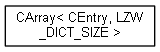
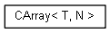
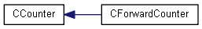
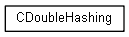
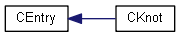
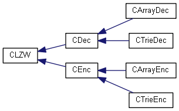
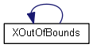

Übung Objektorientierte Programmierung
1.0
First Version 2017
Klassenhierarchie
gehe zur textbasierten Darstellung der Klassenhierarchie







Erzeugt am Sam Jun 2 2018 10:44:30 für Übung Objektorientierte Programmierung von
1.8.13
 1.8.13 1.8.13
1.8.13 1.8.13